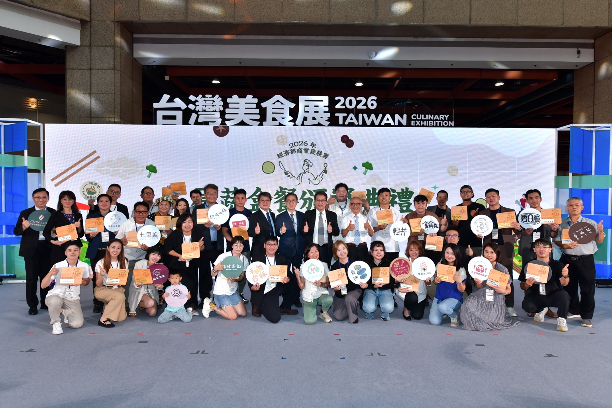

健康餐盒品牌定位
以原型食物、現做主餐與多樣時蔬為核心， 兼顧健康飲食與實際口感， 適合午餐、晚餐及日常外帶需求。
如果你正在尋找健康餐盒加盟、便當店加盟或餐飲創業合作， 小野人餐盒製造所提供不同前期投入與合作年限的加盟方案。 從品牌、餐盒產品、數位營運到開店規劃， 實際合作內容依正式洽談與加盟契約為準。

依不同創業預算與合作方式規劃加盟方案。 正式加盟金、權利金、設備、教育訓練、商圈評估與原物料合作內容， 以雙方正式洽談及加盟契約為準。
小野人以健康餐盒為核心， 同時發展企業團訂、會議餐盒、百貨外送與數位營運工具， 讓門市除了日常散客之外，也能拓展更多訂餐需求。
以原型食物、現做主餐與多樣時蔬為核心， 兼顧健康飲食與實際口感， 適合午餐、晚餐及日常外帶需求。
2026 原蔬食餐盒蔬食組優選， 以「碳烤野菇時蔬」獲選， 持續累積品牌曝光與消費者信任。
除了門市客人，也可發展公司會議便當、 教育訓練、活動餐盒與團體訂餐需求， 增加不同類型訂單來源。
可持續整合線上點餐、外送查詢、 會員系統及內部營運管理工具， 減少重複人工處理。
雞胸、雞腿、牛肉、豬肉、魚類與蔬食餐盒皆可發展， 能依不同商圈與客群調整產品組合。
從實體門市、官方網站到企業訂餐與加盟發展， 持續累積品牌搜尋曝光與線上訂單入口。
從第一次加盟諮詢開始， 先確認預算、地區與創業方向， 再進一步評估商圈與合作方案。
提供預計開店地區、創業預算與目前規劃， 讓我們先了解你的需求。
說明加盟金、權利金、 合作年限及相關營運內容。
確認店址、商圈、客群、 營運型態及實際開店條件。
雙方確認合作內容後， 依正式契約進入教育訓練與開店籌備。
可以先提出諮詢。 實際是否適合加盟，會依個人經驗、預算、店址與營運條件進一步討論。
依加盟方案、店面條件、設備需求與裝修狀況不同， 實際開店預算會有所差異，建議先聯繫我們了解適合的合作方式。
可先提供預計開店城市與地區， 由雙方進一步評估商圈、配送及營運條件。
有可能。 加盟金、權利金與合作內容會依品牌營運與實際合作方案調整， 最終以正式加盟契約為準。